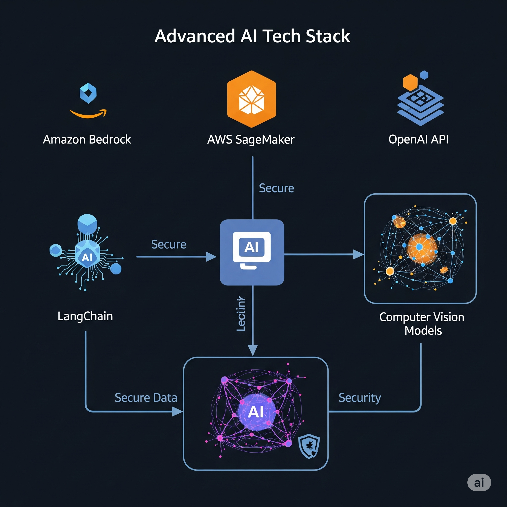
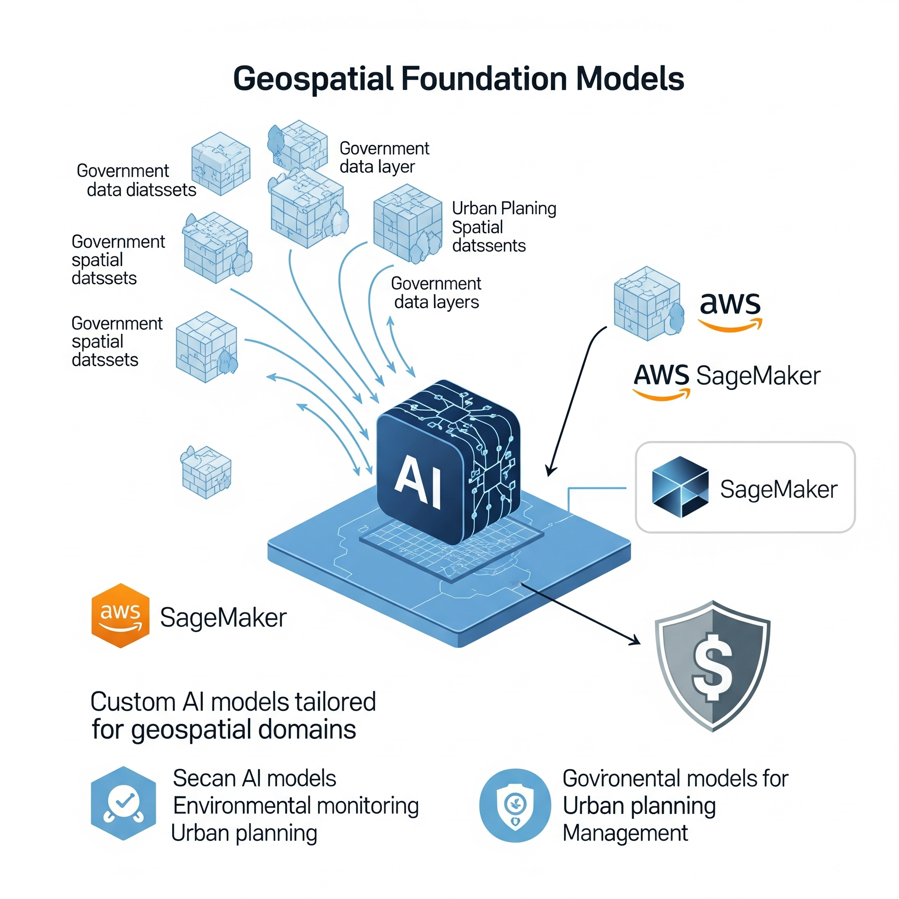

We bridge the gap between cutting-edge AI technology and government security requirements. With expertise in Amazon Bedrock, SageMaker, OpenAI API, and computer vision models, we deliver FISMA-compliant AI solutions that most AI consultants can't—because they don't understand government procurement, security controls for ML models, or legacy system integration challenges.
Explore AI ServicesLeveraging the latest AI technologies: Amazon Bedrock for foundation models, AWS SageMaker for custom ML models, OpenAI API for geospatial applications, computer vision for imagery analysis, and LangChain for geospatial RAG implementations. All deployed with enterprise-grade security and compliance.
View Case Studies
Specialized in geospatial foundation models trained on government datasets, multimodal AI for maps and satellite imagery, AI governance for sensitive data, and edge AI deployment in disconnected/classified environments. Your AI partner who speaks both government and technology.
Get StartedCutting-edge AI solutions designed specifically for government agencies and enterprise clients who need both innovation and compliance.
Custom AI models trained on government spatial datasets using AWS SageMaker. Deploy foundation models that understand your specific geospatial domain while maintaining FISMA compliance.
Learn moreAI systems that understand both maps and satellite imagery. Computer vision models for automated feature extraction, change detection, and intelligent data processing from multiple geospatial sources.
Learn moreResponsible AI implementation for sensitive government data. Security controls for ML models, FISMA compliance frameworks, and risk assessments tailored for AI systems in government environments.
Learn moreDeploying AI models in disconnected/classified environments. Secure, containerized AI solutions that work offline, maintain data sovereignty, and provide real-time geospatial intelligence where connectivity is limited.
Learn moreReal-world examples of AI-powered geospatial solutions delivering measurable results for government and enterprise clients.
Led by a former Census Bureau geographer with over 15 years of experience, our team brings a unique combination of deep geospatial expertise and cutting-edge AI knowledge. Our background provides the foundation for building compliant, mission-critical AI solutions that government agencies can trust.
Key Differentiator: Most AI consultants don't understand FISMA compliance for AI systems, security controls for ML models, government procurement processes, or legacy system integration challenges. We do.
Trusted Experience: Our leadership has worked with CDC, DHS, and FEMA on mission-critical spatial analysis and developing FISMA-compliant geospatial solutions. Now bringing that same expertise to AI-powered geospatial intelligence.
Discuss Your AI ProjectTransform your geospatial capabilities with AI that understands government requirements. Contact Vector Scope AI LLC to discuss how our FISMA-compliant AI solutions can drive your spatial intelligence initiatives forward.
Send Email